Chapter 1: Introduction
Construct 2 นั้นเป็นเครื่องมือที่ช่วยในการสร้างเกม สิ่งสำคัญในการใช้ ‘เครื่องมือ’ นั้นคือการเข้าใจเกี่ยวกับคุณลักษณะ และความสามารถต่าง ๆ ของมันดังนั้นเราจะเริ่มกันที่ Interface ของ Construct 2
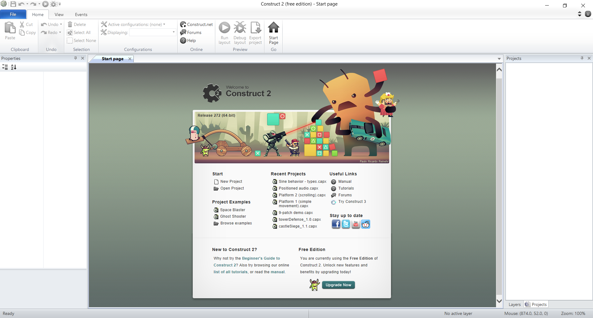(รูป 001 Construct 2 Interface)
File
คลิกที่มุมขวาบนของโปรแกรม เมื่อเปิดจะแสดงหน้าต่างดังนี้
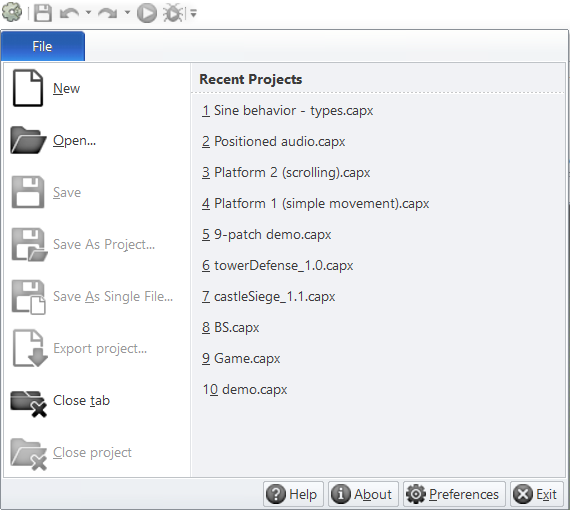(รูป 002 หน้าต่าง File)
และให้กดที่ New จากนั้นจะเป็นการเลือกชนิดของ template โดยจะมีรายละเอียดดังนี้
(รูป 003 หน้าต่างเลือกชนิดของ template)
New empty project
สร้างโปรเจคใหม่โดยใช้ค่าพื้นฐาน (โปรเจคเปล่า)
New retro style project
สร้างโปรเจค โดยมีการเติมข้อมูลบ้างส่วนให้
New empty SD / HD
สร้างโปรเจคเพื่อให้เหมาะกับการแสดงผลผ่านอุปกรณ์ต่าง ๆ
Landscape แนวนอน
Portrait แนวตั้ง (เกมมือถือ)
SD มีความละเอียดที่ 720 x 480p
HD มีความละเอียดที่ 1,280 x 720p
Full HD มีความละเอียดที่ 1,280 x 1080p
4 : 3, 16 : 9 อัตราส่วนภาพ ยาว * สูง
Example game or Template
ตัวอย่างเกม และ การใช้ฟังก์ชันต่าง ๆ
Ribbon tool
คลิกที่มุมขวาบนของโปรแกรม เมื่อเปิดจะแสดงหน้าต่างดังนี้
Home
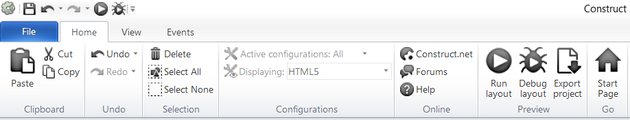(รูป 004 Ribbon tool > Home)
Clipboard
Copy การคัดลอก เก็บไว้ใน คลิปบอร์ด
Paste การวาง
Cut ตัดออก แล้วเก็บไว้ใน คลิปบอร์ด
Undo
Undo ยกเลิกการกระทำนั้น ๆ และย้อนกลับ
Redo ทำซ้ำอีกครั้ง (ใช้หลังจากการกด Undo)
Selection
Delete กดเพื่อลบ Object ที่เลือก (delete)
Select All เลือกทุก Object ใน layout นั้น ๆ
Select None ยกเลิกการเลือกทุก Object
Preview
Run layout การสั่งเล่นไฟล์ปกติ (F5)
Debug layout การสั่งเล่นไฟล์ในโหมดดีบัค (Ctrl + F5)
ทำให้สามารถตรวจข้อมูลทั้งหมดของทุก Object
ในขณะนั้น ใช้สำหรับหาจุดผิดพลาดของเกม
Export project ส่งออกไฟล์ ให้สามารถทำงานบน platform ต่าง ๆ
Web / Mobile /Mobile & Desktop /Desktop
Go
Start Page เปิดหน้าเริ่มต้นของโปรแกรม
View
ส่วนที่ใช้ควบคุมภาพรวมของหน้าต่างโปรแกรม
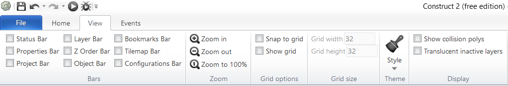(รูป 005 Ribbon tool > View)
Bars
เป็น Check box หาติกถูก จะเป็นการแสดง ส่วนนั้น ๆในหน้า Interface และสามารถจัดตำแหน่งได้
Zoom
Zoom in ขยายเข้า
Zoom out ย่อออก
Zoom to 100% ปรับ ซูมเป็น 100%
Grid options
Snap to grid ทำให้การเคลื่อนย้าย Object จะขึ้นตรงกับ grid
Show grid แสดง grid
Grid size
Grid width กำหนดความกว้าง
Grid height กำหนดความสูง
Theme
รูปแบบ Interface ของ โปรแกรม Construct 2
Display
Show collision polys แสดง Polygon(hitbox) ของทุก Object
Translucent inactive layers ทำให้สามารถ object นอกจาก layer ที่เลือกไม่ทำงาน
Events
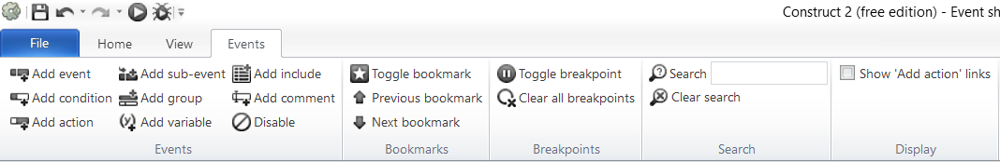(รูป 006 Ribbon tool > Events)
Events
Add event
สร้าง event ใหม่ใน event sheets
Add condition
สร้างเงือนไข่เพิ่มเติมให้ event ที่เลือก
Add action
สร้างการตอบสนองกรณี มีเหตุการณ์เกิดขึ้นตรงกับเงื่อนไขของ event นั้น ๆ
Add sub-event
เงื่อนไขซ้อน
Add group
สร้างที่เอาไว้เก็บ รายการ event ต่าง ๆ เพื่อง่ายต่อการจัด / แก้ไข
Add variable
สร้าง Global variable
#Global variable
ตัวแปรของระบบและมีผลกับทุก Event sheets ของไฟล์
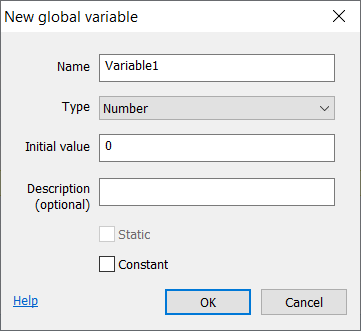(รูป 007 Global variable)
Add include
ใช้สำหรับการเรียกใช้ ชุด event เดิม โดยไม่ต้องเขียนใหม่
Add comment
เพิ่มคำอธิบาย
Disable
ทำให้ event นั้น ๆ ไม่ทำงาน
Properties bar
แถบแสดงสถานะ มีทั้งหมด 3 ประเภทคือ layout, Project, และ Objects
(รูป 008 Layout properties)
Layout properties
1. Name กำหนดชื่อของ layout
2. Event sheet เลือกใช้ Event sheet
3. Active layer แสดง layer ปัจจุบัน
4. Margins พื้นที่ว่างรอบ Layout
5. Effects เพิ่มและแก้ไข Effect ของ Layout
(รูป 009 Project properties)
Project properties
About
1. Name กำหนดชื่อของไฟล์เกม
Project setting
1.First layout เลือก layout แรกที่จะแสดงตอนเปิดเกม
2.Window size กำหนดขนาดของเกมที่จะแสดงผลในจอของผู้เล่น (เส้นปะ)
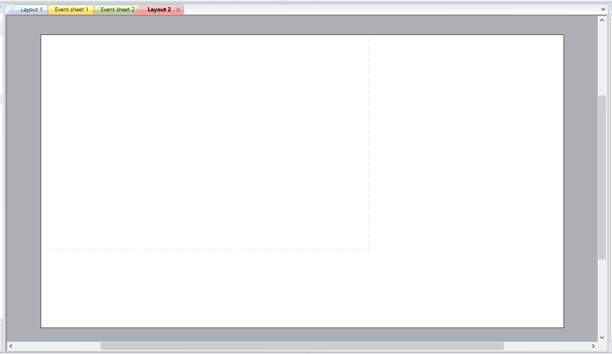(รูป 010 เส้นปะแสดง Window size)
(รูป 011 Object properties)
Object properties
Object type properties
1. Name ชื่อของ object
2. Plugin ชนิดของ object
3. UID ลำดับประจำตัวของ object นั้น
Common
1. Layer แสดงว่า object นั้นอยู่ layer ไหน
2. Angle แสดงค่ามุมของ object
3. Opacity แสดงค่าความทึบแสง
4. Position แสดงตำแหน่ง
5. Size แสดงขนาด
Instance variables
1. Add/edit เพิ่ม/แก้ไข ค่าตัวแปรของ object นั้น ๆ
Behavior
1. Add/edit เพิ่ม/แก้ไข attribute ของ object
Properties
1. Animations แสดง Animation ปัจจุบัน
2. Initial visibility ค่าการมองเห็น
3. Initial animation ตั้งค่า Animation เริ่มต้น
4. Initial frame กำหนด frame เริ่มต้นของ Animation
5. Collisions กำหนดใน object สามารถ มี การชน กับ object อื่นได้
Project bar
แถบแสดงข้อมูล object ของโปรเจค
(รูป 012 Project bar)
1. Layouts แสดง Layout ทั้งหมดของ project
2. Event sheets แสดง event sheet ทั้งหมดของ project
3. Object types แสดง Object ทั้งหมด ของ Project
4. Families กำหนดกลุ่มให้เรา object
5. Sound ที่เก็บไฟล์เสียงเอฟเฟค
6. Music ที่เก็บไฟล์เสียง ประเภทเพลงพื้นหลัง
7. Files นำเข้าไฟล์ หรือ โฟลเดอร์
(รูป 013 ก่อนกำหนด Families)
(รูป 014 หลังกำหนด Families)
Layer bar
แถบแสดงข้อมูลของ layer
(รูป 015 layer bar)
Layer เป็นชั้นของข้อมูล(object)ที่ทับซ้อนกันอยู่ใน Layout นั้น ๆ
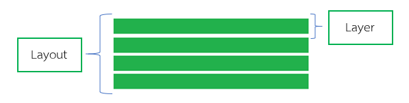1. Add layer to top เพิ่ม layer
2. Toggle layer visible ตั้งค่าให้แสดง / ไม่แสดง
3. Toggle layer locked ทำให้ไม่สามารถเคลื่อนย้าย object ได้
4. Rename layer แก้ไขชื่อ
5. Delete layer ลบ
6. Move layer up ย้าย layout ขึ้นด้านบน
7. Move layer down ย้าย layout ลงด้านล่าง
Status bar
แถบแสดงข้อมูล ณ ปัจจุบันของไฟล์เกม

(รูป 016 Status bar)
1. Event แสดงจำนวน event ทั้งหมดใน project นั้น
2. Active layer แสดง layer ที่อยู่ในปัจจุบัน
3. Mouse แสดงพิกัด เมาส์ ณ ปัจจุบัน
4. Zoom แสดงขนาดการซูม
Z order bar
แสดงลำดับของ object ในแกน z (ความลึก)
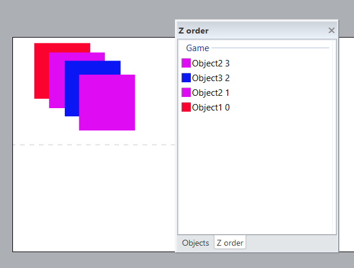(รูป 017 Z order bar)
Object bar
แสดง object ทั้งหมดที่ปรากฎใน layout
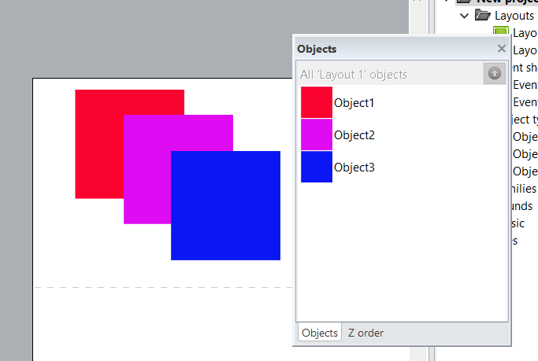(รูป 018 Object bar)
Tilemap Bar
ใช้สำหรับการวาดแผนที่ หรือ ฉากของเกม โดยดึงภาพจาก Tilemap sheet
(รูป 019 Tilemap bar)
1. Normal layout view selection เปลี่ยนเมาส์เป็นแบบปกติ
2. Pencil tile tool เปลี่ยนเมาส์เป็นแบบสำหรับสร้าง
tile โดยเลือกจากตัว tilemap
ที่ละช่อง
3. Rectangle tile tool สร้าง tile จากที่เลือก ด้วยการลาก
4. Erase tile tool ลบ tile ที่สร้างไว้
Workspace
พื้นที่สำหรับจัดวางส่วนต่าง ๆของเกม หากคลิกที่พื้นที่สีขาวจะแสดง Properties bar ของ Layout
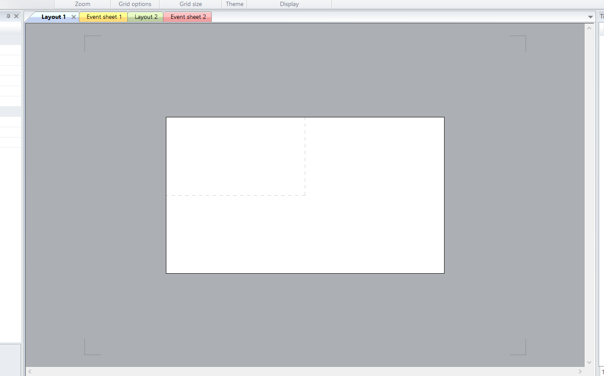(รูป 020 Workspace)